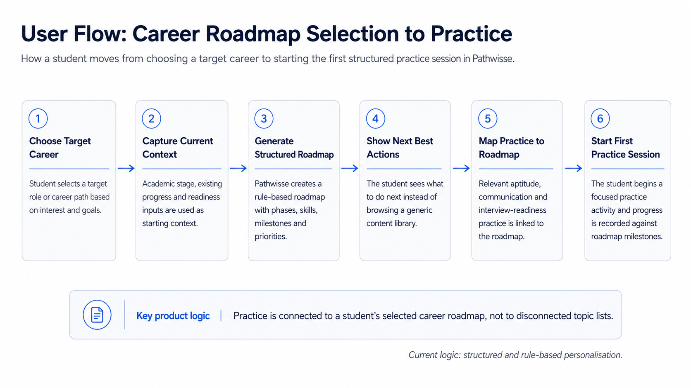

Executive Summary
The Problem
Placement officers lack early visibility into student readiness, discovering skill gaps only when companies start recruiting.
My Role
Contributed to research across five colleges, leading insight synthesis, requirements definition and UX/journey mapping.
What I Did
Mapped student-to-management workflows, defined role-based visibility permissions, and validated flows with HODs and faculty.
The Outcome
Validated platform concepts and structures that secured onboarding commitments from four engineering colleges.
Product Context
B2B Student Success Platform connects academic management, career development and placement preparation across student, faculty, HOD and management portals.
Student activity flows into faculty tracking, department-level oversight and institutional reporting, allowing colleges to identify readiness gaps earlier rather than discovering them during placement season.
The Fragmented Student-Success Problem
Before this platform, the picture looked like this across every college we visited:
The problem was not the absence of content. It was the absence of a connected system showing whether students were becoming placement-ready.
Discovery Across Five Colleges
Discovery was conducted on-site across five colleges with more than 160 stakeholders spanning students, faculty, Heads of Department and institutional leaders. The goal was to understand how placement readiness was currently tracked, where visibility broke down and when intervention happened.
The visual below summarises the participant groups, research approach and recurring themes identified during synthesis.

Discovery was a shared team effort. My ownership was synthesis, problem definition and requirements — see Section 07 for the full breakdown.
Key Research Insights
Students needed clear next actions tied to a career goal.
Faculty needed early signals showing who required support.
HODs needed cohort-level patterns across batches and courses.
Management needed one consolidated institutional view.
The Product Decision
Prioritisation rationale
Given the needs identified during research and the constraints of an early-stage team, we prioritised a shared student-progress layer and role-based visibility before expanding the content library or investing in advanced adaptive personalisation.
Roadmap decisions were shared with the core team. I contributed problem synthesis and requirements; strategy and commercial positioning were team decisions.
How the Four-Role Platform Works
B2B Student Success Platform is structured around a shared data layer connecting all four portals. A student's activity becomes visible to assigned faculty, aggregated for the HOD, and rolled up for management — each role seeing only what is relevant to their function.
Student Experience
Problem
Students had access to learning material but lacked clarity about what to do next, how activities connected to a career goal and whether they were progressing toward placement readiness.
Product response
We designed a guided student experience connecting career goals, structured roadmaps, daily practice, progress milestones and opportunities. The objective was to make the next meaningful action clear rather than present another undifferentiated content library.
My contribution
I translated student research into user flows, requirements, UX direction and acceptance criteria for the roadmap, practice and progress experiences.
Faculty Experience
Problem
Faculty lacked a single view of student engagement and progress. Intervention often happened only after assessments or during placement season.
Product response
The faculty experience was designed to surface engagement, progress and readiness signals for assigned students so faculty could identify who needed support earlier.
My contribution
I worked on signal requirements, intervention workflows, role permissions, expected behaviours and UAT scenarios.
HOD Experience
Problem
HODs depended on manually consolidated reports and could not easily identify patterns across batches, courses or student groups.
Product response
The HOD experience was designed around department-level summaries that helped identify cohort patterns without requiring leaders to review every student individually.
My contribution
I contributed to role requirements, information hierarchy, permission rules and stakeholder validation for department-level reporting.
Management Experience
Problem
Institutional management lacked a consolidated view across departments and depended on reports collected separately from each HOD.
Product response
The management experience was designed to provide cross-department visibility into engagement and readiness without repeated spreadsheet consolidation.
My contribution
I translated leadership needs into reporting requirements, role-based access rules and validation criteria.
My Ownership
This is a team product. This is an accurate account of what I owned, what we shared, and what engineering owned.
- Research synthesis and problem definition
- PRDs and user flows
- Permission mapping
- UX direction
- Acceptance criteria
- UAT
- Product demonstrations
- Feedback synthesis
- Research planning and stakeholder sessions
- Product strategy
- Roadmap priorities
- Pilot planning
- Institutional positioning
- Commercial decisions
- Technical architecture
- Frontend development
- Backend development
- Infrastructure
- Deployment
How I worked across discovery and delivery
Discover
Participated in stakeholder sessions and synthesised recurring problems across students, faculty, HODs and institutional leaders.
Define
Translated research findings into problem statements, workflows, user requirements, role permissions and expected behaviours.
Align
Worked with the core team and engineering to clarify scope, dependencies, edge cases and implementation expectations.
Validate
Created acceptance criteria, supported UAT, demonstrated workflows and translated recurring feedback into product refinements.
Requirements Translation Example
To ensure alignment between stakeholders and engineering, I translate discovery insights directly into structured system rules and acceptance criteria. Here is an example mapping for a critical platform capability:
- Given a Placement Officer is viewing the student-readiness dashboard, when a student's calculated preparation score falls below 60%, then the student's status must be flagged as "At Risk" (red badge) and moved to the attention list.
- Given the attention list is updated, when the assigned faculty advisor logs in, then they must see a notification requesting an intervention check-in.
- Given a faculty advisor completes an intervention meeting, when they log the meeting notes, then the readiness flag must transition to "Intervention Logged" (amber badge) pending the next weekly automated recalculation.
Deep Dive: Tracking & Intervention
Problem
Faculty identified struggling students too late because progress and engagement information was fragmented across manual reports and conversations.
Product response
We designed a tracking model combining engagement signals, roadmap progress and readiness milestones. The platform surfaces potential risk indicators, while faculty remain responsible for deciding when and how to intervene.
Product logic
Engagement signals
Engagement signals include activity recency and practice frequency.
Progress signals
Progress signals compare roadmap completion with expected milestones.
Role-level visibility
Faculty receive individual-level indicators, while HODs receive cohort-level patterns.
Intervention decision
The system provides evidence rather than automatically making intervention decisions.
My contribution
I translated the research insight into signal requirements, permission rules, intervention workflows, acceptance criteria and UAT scenarios.
Current limitation
The quality of intervention signals still requires validation through sustained usage. Future measurement should assess whether faculty act on the signals and whether those interventions improve student progress.
Deep Dive: Career Roadmaps
Problem
Students had access to generic learning material but lacked a structured path connecting their current academic stage with a specific career goal.
Product response
Career preparation was organised into:
Selected career goal
Required skill areas
Phases and stages
Practice activities
Progress milestones
Clear next actions
My contribution
I helped translate the student journey into the roadmap flow, progression requirements, UX direction and acceptance criteria.
Personalisation clarification
Current personalisation is structured and rule-based. Roadmaps vary based on the selected career goal, academic stage and predefined skill requirements. The system does not yet dynamically modify the learning path in real time based on individual performance patterns.
Career roadmap selection to first practice session

Deep Dive: Practice Labs & AI Mock Interviews
Aptitude practice
Problem
Aptitude preparation was often inconsistent and concentrated around assessments or placement season.
Product response
Practice Labs was designed around short, repeatable exercises covering quantitative reasoning, verbal ability and logical reasoning.
My contribution
I contributed to the practice journey, requirements, expected states, acceptance criteria and UAT.
Communication practice
Problem
Students had limited structured support for spoken communication, self-introductions and interview responses.
Product response
Communication practice was designed around guided prompts, speaking structures, timed responses and repeated practice.
My contribution
I worked on the user flow, prompt structure, recording states, edge cases and feedback requirements.
AI mock-interview experience
The AI mock-interview experience is being developed as a voice-based system that can simulate interview conversations, ask contextual follow-up questions and provide structured feedback on clarity, content and response structure.
Why voice
The problem was not only knowing what to say. Students also needed practice expressing answers clearly and confidently under time pressure, which text-based exercises could not fully reproduce.
My contribution
I defined the interview-session flow, mic-permission and connection-drop states, no-answer handling, feedback-display requirements and acceptance criteria for evaluation quality.
Current limitation
The AI interview experience is still early-stage. Question quality, contextual follow-up and evaluation accuracy require further validation with real usage data.
Validation & Onboarding
Four colleges completed onboarding. The path from research to institutional validation and onboarding was built through demonstrations with stakeholders involved in discovery.
College research across five institutions
Product demonstration across all four role-based portals
Stakeholder feedback collected and synthesised into product changes
Workflow changes and onboarding requirements documented
Pilot planning with the core team
4 colleges onboarded
I structured and delivered demonstrations across the four role-based portals, captured stakeholder objections and feature requests, and translated recurring feedback into product and onboarding improvements.
Onboarding demonstrated institutional interest and workflow relevance. It does not yet establish improved placement or student-readiness outcomes, which require a complete usage and placement cycle.
What Changed After Validation
During stakeholder demonstrations and user validation sessions, we identified critical gaps between the initial product design and actual operational requirements. This led to two key changes:
1. Departmental Oversight (HOD/Placement Portals)
Initial scope: Focus was on individual student practice roadmaps and faculty intervention lists.
After Validation: HODs and Placement Officers requested department-level summaries. We designed aggregated dashboards to show batch-level readiness metrics, allowing leaders to track placement health without checking student profiles one by one.
2. Automated Readiness Recalculation
Initial scope: Faculty manually updated student readiness status based on subjective check-ins.
After Validation: HODs objected to the administrative burden of manual updates. We implemented a dynamic background job that aggregates Practice Lab activity and webinar attendance nightly to recalculate readiness scores automatically.
What Remains Unvalidated
Student and placement outcomes
Improved readiness and placement outcomes require a complete, instrumented student and placement cycle.
Intervention-signal quality
Risk indicators require sustained usage data and measurement of whether faculty act on them.
AI and personalisation
AI evaluation and dynamically adaptive personalisation remain early-stage capabilities requiring further validation.
Institutional retention
Long-term institutional value needs to be observed through continued usage, renewal and expansion.
Metrics to Measure Next
Product Learnings
Discovery changed the product direction
Research across five colleges and more than 160 stakeholders before making the major product and platform decisions shaped a fundamentally different direction from the initial content-led assumption.
Role-based products require role-based research
Every role had a different relationship with the same problem. HODs needed aggregates, not individual records. Faculty needed early signals, not end-of-term summaries. Building the right thing for each role required understanding each role independently before connecting them.
Clear acceptance criteria improved delivery and UAT
Writing acceptance criteria before development made UAT clearer and less ambiguous. Issues could be evaluated against predefined expected behaviour rather than interpreted during testing.
The strongest product decisions were the ones we could trace to a real stakeholder problem, not the ones that sounded most impressive in a roadmap discussion.
B2B Student Success Platform
Flagship case study · B2B EdTech · 4 colleges onboarded